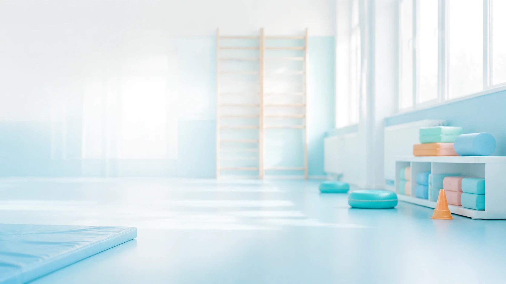
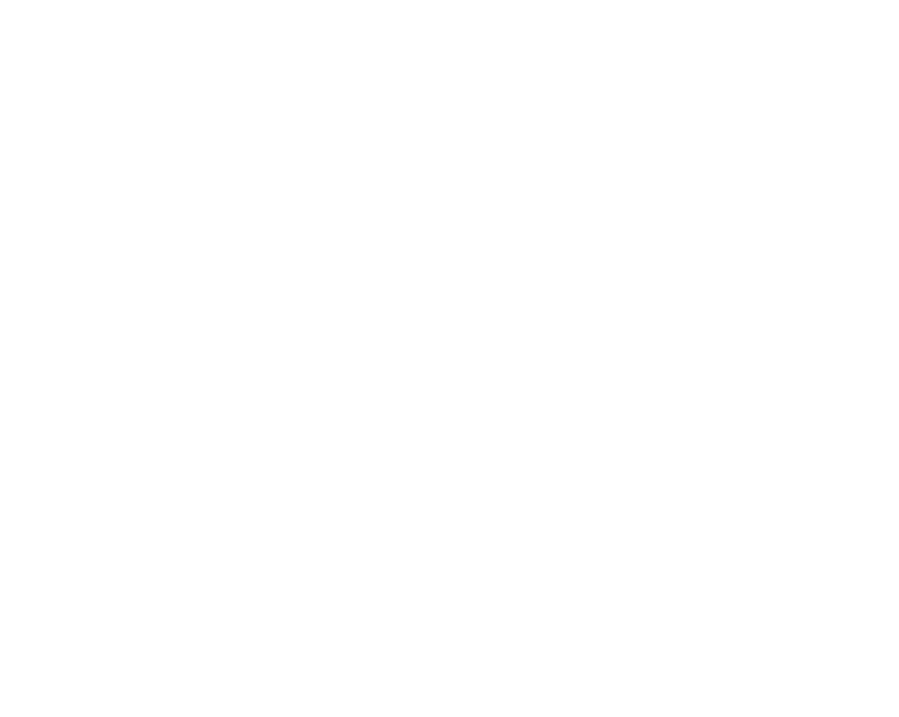
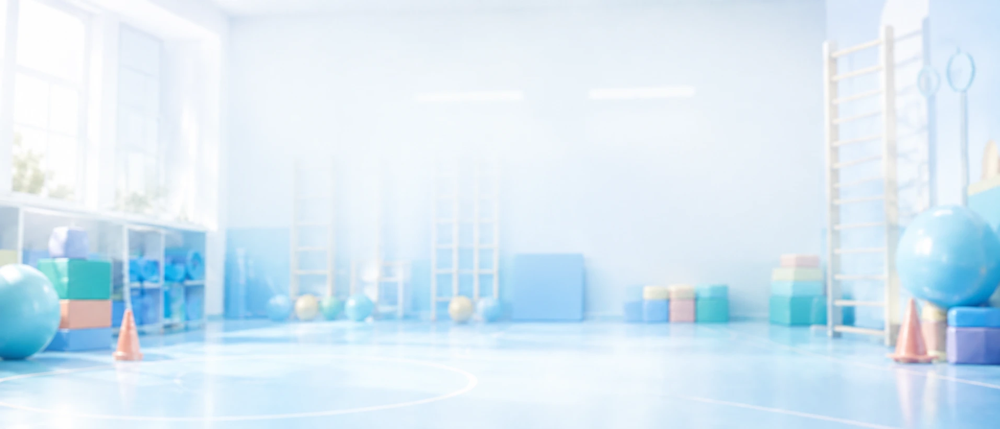

נעים להכיר,
מאז שהייתי ילדה רציתי לעזור לילדים מבחינה רגשית.
כילדה עברתי בעצמי טיפולים שלא תמיד הרגישו לי נעימים, מחוברים או מותאמים לעולם שלי. כבר אז הבטחתי לעצמי שיום אחד אעשה את זה אחרת.
כשהגעתי לשלב הלימודים הבנתי שיש ילדים שעבורם ישיבה בחדר במשך זמן ממושך ושיחה עם מבוגר יכולות להיות קשות, משעממות או לא טבעיות.
חיפשתי דרך שיש בה תנועה, אנרגיה, משחק, חוויה וקצת בלגן טוב — ואז גיליתי את עולם הספורט הטיפולי.
מאז אני עוסקת בתחום קרוב לעשור.
במהלך השנים ראיתי ילדים עוברים תהליכים משמעותיים דווקא משום שהם נהנים מהדרך. הם מגיעים לחוג, פוגשים חברים, חווים הצלחות ומפתחים מקום שבו טוב להם להיות.
וזה הדבר החשוב ביותר מבחינתי.
מאז אני עוסקת בתחום קרוב לעשור.
במהלך השנים ראיתי ילדים עוברים תהליכים משמעותיים דווקא משום שהם נהנים מהדרך. הם מגיעים לחוג, פוגשים חברים, חווים הצלחות ומפתחים מקום שבו טוב להם להיות.
וזה הדבר החשוב ביותר מבחינתי.
טובה טייכמאן
מייסדת ומנהלת מקצועית, קידיספורט
ככל שקידיספורט גדלה, הבנתי שכדי להגיע לעוד ילדים ולשמור על רמה מקצועית גבוהה, אני זקוקה לצוות מצוין לצדי.
צירפתי לקידיספורט מדריכות מקצועיות, שכולן בעלות תעודת הסמכה בספורט טיפולי מטעם וינגייט.
כיום התפקיד שלי הוא לראות את התמונה הרחבה ולדאוג להתקדמות של הילדים.
אני עוברת על מערכי השיעור, מקבלת דיווחים לאחר הפעילויות ומדריכה את הצוות מדי שבוע.
לא משנה אם מדריכה נמצאת בתחום שנתיים או שבע שנים — כל אשת מקצוע צריכה הדרכה, משוב ועין נוספת שרואה מבחוץ.
כך אנחנו שומרות על למידה מתמדת, עבודה מדויקת ומעקב מקצועי.
שכל ילד יקבל יחס אישיגם בתוך קבוצה, לכל ילד יש תוכנית, מטרות ומעקב שמותאמים עבורו.
שילד ירגיש טובהילד לא צריך להרגיש שהוא מגיע לטיפול משום שמשהו בו לא בסדר. הוא מגיע למקום שבו הוא משחק, מצליח ומתחזק.
לעבוד במקצועיותמאחורי כל פעילות עומדים מערך שיעור, מטרות ברורות, דוחות והדרכה מקצועית.
להפוך את הטיפול לנגישלכן פתחנו חמישה סניפים ברחבי בית שמש ויצרנו אפשרות להשתתפות דרך קופות החולים, בהתאם לזכאות.
לשתף את ההוריםההורים הם חלק משמעותי מהתהליך. אנחנו מקיימות שיחת אינטייק ומעדכנות אותם באמצעות דוחות התקדמות ממוקדים.

כל מדריכות קידיספורט בעלות הסמכה בספורט טיפולי מטעם וינגייט.
כל מדריכה מקבלת הדרכה מקצועית שבועית, עובדת לפי תוכניות מסודרות ומתעדת את הפעילות וההתקדמות של הילדים.
מעקב ותיעוד התקדמות
הדרכה מקצועית שבועית
הסמכה מטעם וינגייט